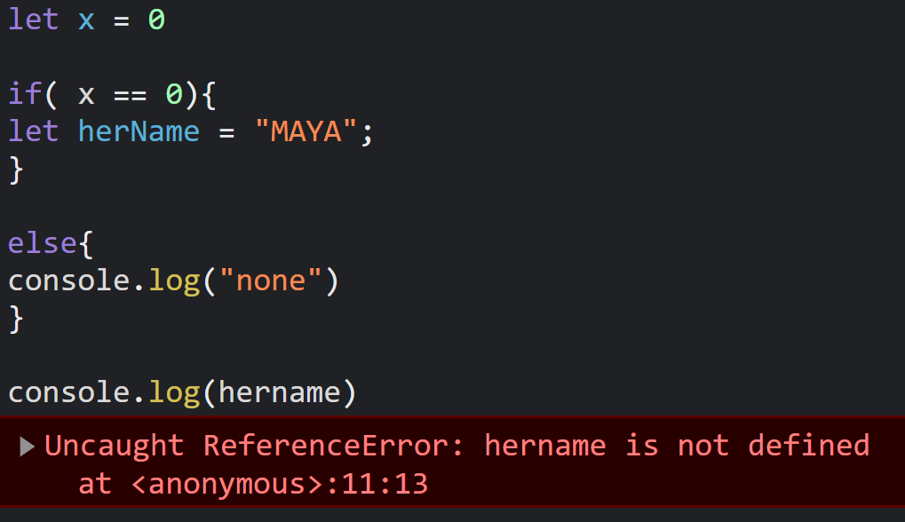

Q1. Discuss the scope of var, let, and const
Ans :
-
Var : "var" declaration are global scoped, means we can access the variable from anywhere & var declared
variables can be updated and redeclared
Example :If a variable is declared with "var" inside a function, the variable will be accessible both
inside and outside the function

-
Let : "let" is a keyword introduced in ES6 used to declare a block scoped variable. Blocked scoped
variables are limited to the block in which they are defined (Usually denoted by curly braces {})
Example : if we declared a variable inside a loop, then the variable is not accessable ouside the loop

-
Const : A variable declared with "const" is also a block scoped variable just like "let". Const was also
introduced in ES6. But const has a slight deferent, the value of "const" variable cannot be updated.
Example : const x = 10;
after declaring the variable "x" with "const" ,we can't change the value of "x"
if we try to do this x = 18 or x = x + 1
it will give us an error in our code
Q2. Tell us the use cases of null and undefined
-
Undefined: Undefined is basically used for when we are trying to uninitialized variables, missing function
arguments, and when trying to access nonexistent object properties
-
Null: "null" is used to represent the absence of a value. It can also be used in comparisons to check for the absence of a value in a object.